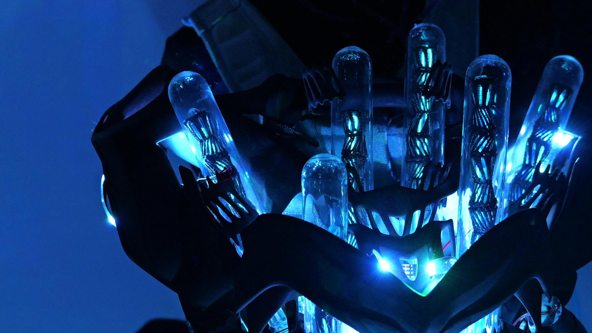
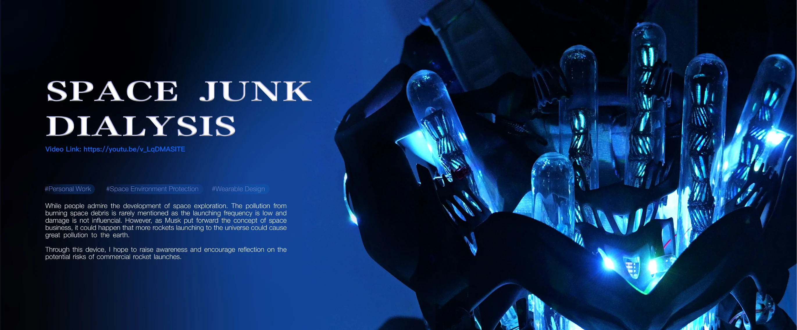
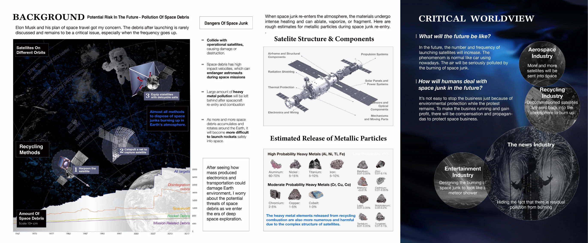
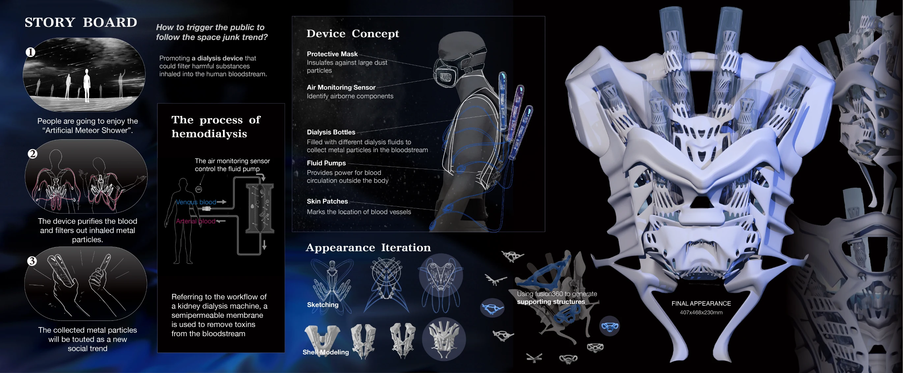
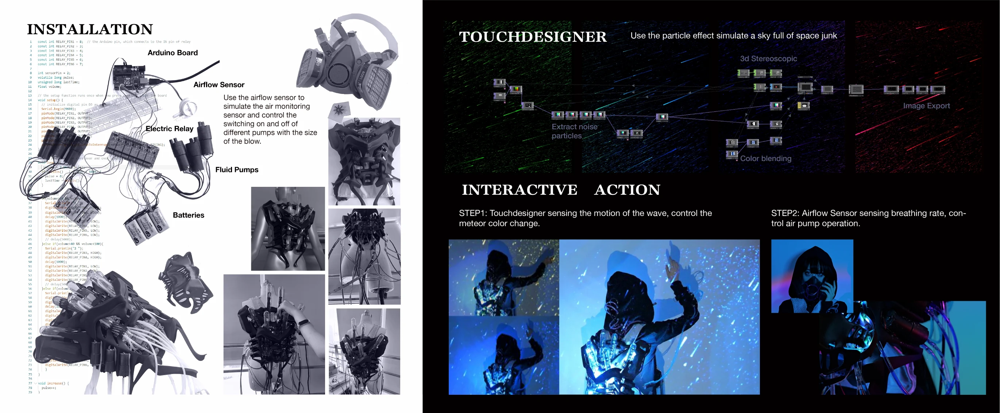
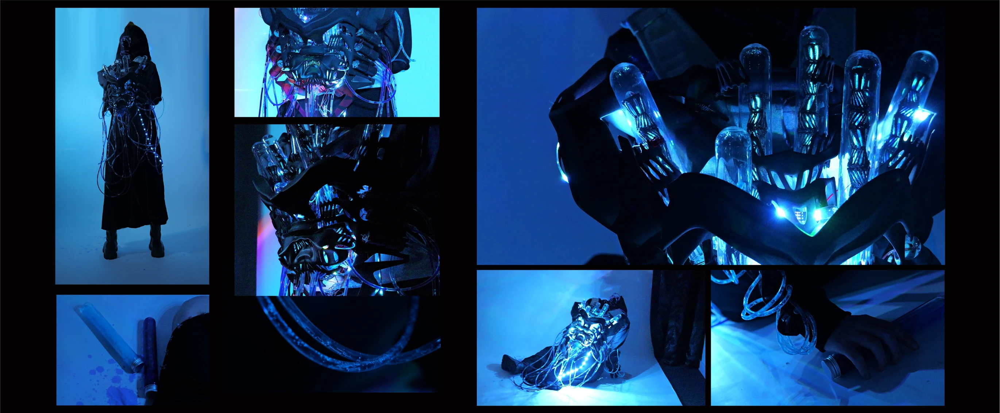

2024 · PERSONAL WORK
KALPA
Speculative Healthcare for a Space-Debris-Contaminated Future
KALPA is a speculative wearable interactive installation exploring the conflict between future extra-terrestrial commercial expansion and the microscopic ecology of the human body.
Driven by real-time airflow sensors, the bio-synthetic apparatus responds to each breath. Fluid pumps pulse like kidney dialysis, translating the metallic debris of atmospheric re-entry into a visceral bodily experience.
We are no longer just stargazers. We have become the final filters of a dying galaxy.
PROJECT FILM
PROJECT DOCUMENTATION




